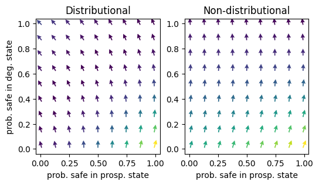
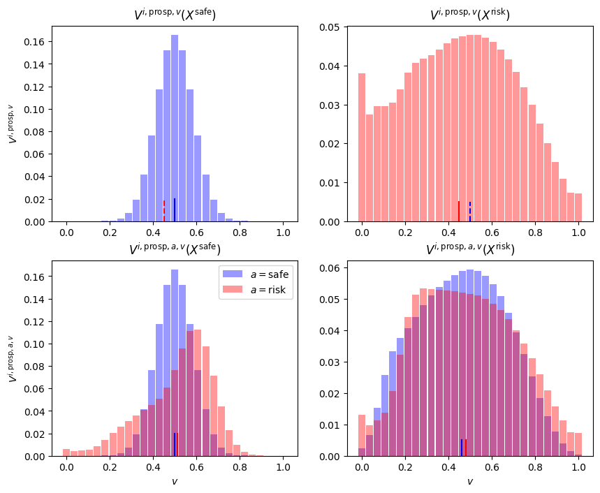

# general imports
import numpy as np
from scipy.stats import norm
import jax.numpy as jnp
from jax import jit
from functools import partial
import matplotlib.pyplot as plt
import matplotlib as mpl
import pandas as pd
import seaborn as sns14 Intertemporal risky choice problem {#sec-intertemporal}
# pyCRLD imports
# Agents
from pyCRLD.Agents.Base import abase
from pyCRLD.Agents.StrategyActorCritic import stratAC
# Environment
from pyDDRL.Environments.RiskRewardDilemma import RiskRewardDilemma
# Utilities
from pyCRLD.Utils.Helpers import *
from pyCRLD.Utils import FlowPlot as fp
from pyDDRL.Utils.Trajectories1D import trajectories_1D
from pyDDRL.Utils.PhasePlot import phaseplot, _data_to_plot, _strategies, _dXisa_s
from pyDDRL.Utils.PlottingTools import *# DDRL imports
from pyDDRL.Agents.DDRLBase import DDRLBase
from pyDDRL.Agents.DDRLActorCritic import DDRLActorCriticThen, we define the environment:
# Define environment
env = RiskRewardDilemma(pc=0.2, pr=0.1, rc=0.5, rr=1, rd=0)In this section, we use Actor-Critic agents (defined in Section ?sec-ddrlac ). The reason we use such agents is that, unlike SARSA agents, they have no exploratory parameter (such as the inverse temperature \(\beta\)). Therefore, we can investigate the effects of optimism and pessimism on the Actor-Critic agents’ trajectories towards a safe or risky strategy, without considering the effects of the heuristics on exploration in the degraded state.
14.1 Sanity tests
First, we carry out sanity tests in order to check that DDRLActorCritic agents yield the same flow plots as a regular AC agent. We compare different DDRL biasing methods in order to choose the most appropriate. To this end, we compare DDRLActorCritic agents and regular ActorCritic agents across 3 values of the discount factor \(\gamma\): \(\gamma = 0\), \(\gamma = 0.4\), and \(\gamma = 0.9\). First, we create neutral DDRLActorCritic agents which take the mean of their V-return distribution as their value estimate.
# Values of gamma
gammas = [0., 0.4, 0.9]In Section ?sec-calibration , we found that the discretization sigma that yields the minimal error is \(\sigma=0.05\) for \(\gamma=0.4\), and \(\sigma=0.03\) for \(\gamma=0.9\). For these sanity tests, we use \(\sigma=0.05\), because it does not increase the error when \(\gamma=0.9\) by much.
# Define agents to compare
aeis_reg = [] # regular SARSA agents
aeis_ddrl = [] # DDRLSarsa agents
for i, gamma in enumerate(gammas):
aei_reg = stratAC(env=env, learning_rates=0.1, discount_factors=gamma,
use_prefactor=True)
aeis_reg.append(aei_reg)
aei_ddrl = DDRLActorCritic(env, nr_reward_bins=29, discretization_sigma=0.05,
learning_rates=0.1, discount_factors=gamma,
Rmin=0, Rmax=1,
method="mean", use_prefactor=True)
aeis_ddrl.append(aei_ddrl)WARNING:2025-12-21 19:48:20,771:jax._src.xla_bridge:794: An NVIDIA GPU may be present on this machine, but a CUDA-enabled jaxlib is not installed. Falling back to cpu.Now, we can visualize the flowplots:
# Phase space items to plot along the x- and y- axes
x = ([0], [0], [0]) # prosperous state
y = ([0], [1], [0]) # degraded state
# For trajectories
Xinits = [np.ones((1, 2, 2)) * 0.5] # initial strategy
cols = ["orange"] # trajectory color
# Decorations
titles = [r'$\gamma = 0.0$', r'$\gamma = 0.4$', r'$\gamma = 0.9$']
xlabel = "prob. safe action in prosp. state"
ylabel = "prob. safe action in deg. state"
# Figure and axes
fig, (ax1, ax2, ax3) = plt.subplots(1, 3, figsize=(3.2 * 3.8, 3.8))
axes = [ax1, ax2, ax3]
# Plot flow plots and trajectories
plot_3flowplots(aeis_reg, x, y, NrRandom=16, cmap='Reds', axes=axes)
plot_3flowplots(aeis_ddrl, x, y, NrRandom=16, cmap='Blues', decorate=True,
titles=titles, xlabel=xlabel, ylabel=ylabel,
Xinits=Xinits, cols=cols, axes=axes)
# Additional decorations
ax3.plot([], [], color='red', label='detAC')
ax3.plot([], [], color='blue', label='DDRL AC')
ax3.legend(bbox_to_anchor=(1.01, 1.01))
# Save the figure
plt.savefig('../figs/RRSanityTestMean.tiff', dpi=300, bbox_inches='tight', format='tiff')
plt.show()<Figure size 3648x1140 with 3 Axes>Now, we compare the regular AC agents with an expectile-DDRLActorCritic agent (\(\tau = 0.5\), which should be equivalent with taking the mean of the V-return distribution). Defining the expectile agents:
# Define agents to compare
aeis_ddrl = [] # DDRLSarsa agents
for i, gamma in enumerate(gammas):
aei_ddrl = DDRLActorCritic(env, nr_reward_bins=29, discretization_sigma=0.05,
learning_rates=0.1, discount_factors=gamma,
Rmin=0, Rmax=1,
method="expectile", tau=0.5, use_prefactor=True)
aeis_ddrl.append(aei_ddrl)And visualizing the flowplots:
# Figure and axes
fig, (ax1, ax2, ax3) = plt.subplots(1, 3, figsize=(3.2 * 3.8, 3.8))
axes = [ax1, ax2, ax3]
# Plot flow plots and trajectories
plot_3flowplots(aeis_reg, x, y, NrRandom=16, cmap='Reds', axes=axes)
plot_3flowplots(aeis_ddrl, x, y, NrRandom=16, cmap='Blues', decorate=True,
titles=titles, xlabel=xlabel, ylabel=ylabel,
Xinits=Xinits, cols=cols, axes=axes)
# Additional decorations
ax3.plot([], [], color='red', label='detAC')
ax3.plot([], [], color='blue', label='DDRL AC')
ax3.legend(bbox_to_anchor=(1.01, 1.01))
# Save the figure
plt.savefig('../figs/RRSanityTestExpectile.tiff', dpi=300, bbox_inches='tight', format='tiff')
plt.show()<Figure size 3648x1140 with 3 Axes>Finally, we compare the regular AC agents with a weights-ActorCritic agent (\(w_U = 1\), which should be equivalent with taking the mean of the V-return distribution). Defining the weights agents:
# Define agents to compare
aeis_ddrl = [] # DDRLSarsa agents
for i, gamma in enumerate(gammas):
aei_ddrl = DDRLActorCritic(env, nr_reward_bins=29, discretization_sigma=0.05,
learning_rates=0.1, discount_factors=gamma,
Rmin=0, Rmax=1,
method="weights", wU=1., use_prefactor=True)
aeis_ddrl.append(aei_ddrl)Now visualizing:
# Figure and axes
fig, (ax1, ax2, ax3) = plt.subplots(1, 3, figsize=(3.2 * 3.8, 3.8))
axes = [ax1, ax2, ax3]
# Plot flow plots and trajectories
plot_3flowplots(aeis_reg, x, y, NrRandom=16, cmap='Reds', axes=axes)
plot_3flowplots(aeis_ddrl, x, y, NrRandom=16, cmap='Blues', decorate=True,
titles=titles, xlabel=xlabel, ylabel=ylabel,
Xinits=Xinits, cols=cols, axes=axes)
# Additional decorations
ax3.plot([], [], color='red', label='detAC')
ax3.plot([], [], color='blue', label='DDRL AC')
ax3.legend(bbox_to_anchor=(1.01, 1.01))
# Save the figure
plt.savefig('../figs/RRSanityTestWeights.tiff', dpi=300, bbox_inches='tight', format='tiff')
plt.show()<Figure size 3648x1140 with 3 Axes>14.2 Influence of optimism/pessimism
Since the flowplots obtained with the weights method are closest to the regular AC agents’ flowplots, we use this method to implement optimism/pessimism. We study the influence of optimism for a low discount factor \(\gamma = 0.4\), and for a high discount factor \(\gamma = 0.9\). We assume that, in the degraded state, the agent always chooses the safe action (since it is the only one which can take it back to the prosperous state).
# Levels of optimism/pessimism (defined by upper weight values w_U)
weights = np.array([0.1, 0.2, 0.4, 0.8, 1., 2., 4., 8., 10.])
# Phase space items to plot along the x-axis
x = ([0], [0], [0])
# Range and resolution
res = np.linspace(0, 1., 21)
res[0] = 0.0001
res[-1] = 0.9999
# Value of X^{0,1,0}
otherXs = np.ones((len(res)))For a low discount factor \(\gamma = 0.4\):
# Plot and save - gamma = 0.4
compare_levels(env, weights, gamma=0.4, beta=50, Rmin=0, Rmax=1, xinds=x,
res=res, algo='AC', nrb=29, discsig=0.05,
traj_len=800, otherXs=otherXs, cmap='coolwarm',
save=True, savename='../figs/RRPhasePlotGamma04.tiff')
plt.show()<Figure size 5130x1140 with 3 Axes>For a high discount factor \(\gamma=0.9\):
# Plot and save - gamma = 0.9
compare_levels(env, weights, gamma=0.9, beta=50., Rmin=0, Rmax=1,
xinds=x, algo='AC', res=res, nrb=29, discsig=0.05,
traj_len=1800, otherXs=otherXs, cmap='coolwarm',
save=True, savename='../figs/RRPhasePlotGamma09.tiff')
plt.show()<Figure size 5130x1140 with 3 Axes>We can visualize the impact of optimism/pessimism on the agent’s strategy in both states, by using flowplots. Here, we show flowplots for a pessimistic agent (\(w_U = 0.2\)), a neutral agent (\(w_U = 1\)), and an optimistic agent (\(w_U = 5\)). First, we study how optimism/pessimism impacts the strategy of an agent with low discount factor \(\gamma = 0.4\).
x = ([0], [0], [0]) # prosperous state
y = ([0], [1], [0]) # degraded state
w_list = [0.2, 1, 5] # list of weights# Define agents to compare
aeis = [] # DDRLActorCritic agents
for i, w in enumerate(w_list):
aei = DDRLActorCritic(env, nr_reward_bins=29, discretization_sigma=0.05,
learning_rates=0.1, discount_factors=0.4,
Rmin=0, Rmax=1,
method="weights", wU=w, use_prefactor=True)
aeis.append(aei)# For trajectories
Xinits = [np.ones((1, 2, 2)) * 0.5] # initial strategy
cols = ["orange"] # trajectory color
# Decorations
titles = [r'$w = 0.2$', r'$w = 1$', r'$w = 5$']
xlabel = "prob. safe action in prosp. state"
ylabel = "prob. safe action in deg. state"
# Figure and axes
fig, (ax1, ax2, ax3) = plt.subplots(1, 3, figsize=(3.2 * 3.8, 3.8))
axes = [ax1, ax2, ax3]
# Plot flow plots and trajectories
plot_3flowplots(aeis, x, y, NrRandom=16, cmap='Blues', decorate=True,
titles=titles, xlabel=xlabel, ylabel=ylabel,
Xinits=Xinits, cols=cols, axes=axes)
# Save the figure
plt.savefig('../figs/RRFlowplotsGamma04.tiff', dpi=300, bbox_inches='tight', format='tiff')
plt.show()<Figure size 3648x1140 with 3 Axes>We then turn to agents with a high discount factor \(\gamma=0.9\).
# Define agents to compare
aeis = [] # DDRLActorCritic agents
for i, w in enumerate(w_list):
aei = DDRLActorCritic(env, nr_reward_bins=29, discretization_sigma=0.05,
learning_rates=0.1, discount_factors=0.9,
Rmin=0, Rmax=1,
method="weights", wU=w, use_prefactor=True)
aeis.append(aei)# For trajectories
Xinits = [np.ones((1, 2, 2)) * 0.5] # initial strategy
cols = ["orange"] # trajectory color
# Decorations
titles = [r'$w = 0.2$', r'$w = 1$', r'$w = 5$']
xlabel = "prob. safe action in prosp. state"
ylabel = "prob. safe action in deg. state"
# Figure and axes
fig, (ax1, ax2, ax3) = plt.subplots(1, 3, figsize=(3.2 * 3.8, 3.8))
axes = [ax1, ax2, ax3]
# Plot flow plots and trajectories
plot_3flowplots(aeis, x, y, NrRandom=16, cmap='Blues', decorate=True,
titles=titles, xlabel=xlabel, ylabel=ylabel,
Xinits=Xinits, cols=cols, axes=axes)
# Save the figure
plt.savefig('../figs/RRFlowplotsGamma09.tiff', dpi=300, bbox_inches='tight', format='tiff')
plt.show()<Figure size 3648x1140 with 3 Axes>14.3 Bistability regimes and individual dilemma
In this section, we dive deeper into the particularities of our distributional model when combined to intertemporal choice. Indeed, Figure 14.6 shows the emergence of a bistability regime for distributional agents when \(\gamma = 0.4\) and \(w=0.2\). In fact, we show that a bistability regime emerges even for neutral (\(w = 1\)) distributional agents, whereas neutral, non-distributional agents, do not exhibit bistability. This can be visualized in the Figure below:
# Discount factors
gammas = np.array([0.80, 0.84, 0.88, 0.92, 0.96, 0.9999])
# Phase space items to plot along the x-axis
x = ([0], [0], [0])
# Range and resolution
res = np.linspace(0, 1., 21)
res[0] = 0.0001
res[-1] = 0.9999
# Value of X^{0,1,0}
otherXs = np.ones((len(res)))# Plot
compare_gammas(env, gammas, Rmin=0, Rmax=1, xinds=x,
res=res, nrb=29, discsig=0.05,
traj_len=800, otherXs=otherXs, cmap='viridis',
save=True, savename='../figs/DistDetPhasePlots.tiff')
plt.show()<Figure size 3600x1140 with 2 Axes>We can get a broader overview of the different stability regimes for various values of \(w\) and \(\gamma\):
# Safe and risky policies
Xsafe = np.array([[[0.999,0.001],[1,0]]])
Xrisk = np.array([[[0.001,0.999],[1,0]]])discountfactors = np.linspace(0.01, 0.99, 21)
weights = np.array([0.1, 0.2, 0.3, 0.4, 0.5,
0.6, 0.7, 0.8,
0.9, 1., 2., 3., 4.,
5., 6., 7., 8., 9., 10.])# risky_optimal_data_container, indicator_stable = fill_containers(env, Xrisk, Xsafe, discountfactors, weights)# Extract data
df_optimal = pd.read_csv("../data/risky_optimal.csv")
df_indicator = pd.read_csv("../data/indicator_stable.csv")# Convert to numpy array
risky_optimal_data_container = df_optimal.to_numpy()[:, 1:]
indicator_stable = df_indicator.to_numpy()[:, 1:]# For drawing the black lines
risky_optimal_reverse = np.array(1 - risky_optimal_data_container).astype(int)
risky_bottom = np.sum(risky_optimal_reverse[:8, :], axis=0).astype(int)
risky_top = len(discountfactors) - np.sum(risky_optimal_reverse[8:, :], axis=0)
line_bottom = np.repeat(discountfactors[risky_bottom], 3)
line_top = np.repeat(discountfactors[risky_top], 3)
height = discountfactors[1] - discountfactors[0]
line_bottom = line_bottom - height/2
line_top = line_top - height/2# Plot
from matplotlib.colors import ListedColormap, BoundaryNorm
from matplotlib.patches import Rectangle
hatches = {0.: '///', 1.: "\\\\\\"}
labels = {1.: r'$V_{risky} > V_{safe}$', 0.: r'$V_{safe} \geq V_{risky}$'}
x_vals = weights
y_vals = discountfactors
nx = len(x_vals)
ny = len(y_vals)
fig, ax = plt.subplots(1,1, figsize=(7,7))
vals = {10}
x_points = np.zeros((len(weights)*3))
x_points[0] = 0.09
x_points[-1] = 10.5
x_points[1::3] = weights
for (i, j), val in np.ndenumerate(risky_optimal_data_container):
if j < nx - 1:
width = x_vals[j+1] - x_vals[j]
xp1 = x_vals[j+1]-width/2-0.0001
xp2 = x_vals[j+1]-width/2+0.0001
x_points[3*j+2] = xp1
x_points[3*j+3] = xp2
else:
width = x_vals[j] - x_vals[j-1]
if i < ny - 1:
height = y_vals[i+1] - y_vals[i]
else:
height = y_vals[i] - y_vals[i-1]
if val not in vals:
label = labels[val]
vals.add(val)
# Draw rectangle with no fill but black edge and hatch pattern
rect = Rectangle((x_vals[j] - width/2, y_vals[i] - height/2), width, height,
fill=False, edgecolor='black', hatch=hatches[val],
linewidth=0, label=label) # no visible border line
else:
rect = Rectangle((x_vals[j] - width/2, y_vals[i] - height/2), width, height,
fill=False, edgecolor='black', hatch=hatches[val],
linewidth=0) # no visible border line
if x_vals[j]==1: # Special case
width=0.55
xp1 = x_vals[j+1]-0.5-0.0001
xp2 = x_vals[j+1]-0.5+0.0001
x_points[3*j+2] = xp1
x_points[3*j+3] = xp2
rect = Rectangle((x_vals[j] - 0.05, y_vals[i] - height/2), width, height,
fill=False, edgecolor='black', hatch=hatches[val],
linewidth=0) # no visible border line
ax.add_patch(rect)
# if (indicator_highlight[i, j] == 2) or (indicator_highlight[i, j] == 5):
# text = ax.text(x_vals[j], y_vals[i], '*',
# ha="center", va="center", color="w")
# Create a discrete colormap with colors for 1, 2, 3
cmap = ListedColormap(['red', 'blue', 'purple'])
# Define boundaries between your discrete values
bounds = [0.5, 1.5, 2.5, 3.5]
norm = BoundaryNorm(bounds, cmap.N)
ax.pcolormesh(weights, discountfactors,
indicator_stable, cmap=cmap, norm=norm, alpha=.6)
ax.plot(x_points, line_bottom, color='k')
ax.plot(x_points, line_top, color='k')
ax.set_xlabel('Weight '+r'$w_U$', fontsize=16)
ax.set_xscale('log')
ax.set_xlim([0.09, 10.5])
ax.set_ylim([0.01, 0.99])
ax.plot([], [], color='red', alpha=.6, label="risky stable")
ax.plot([], [], color='blue', alpha=.6, label="safe stable")
ax.plot([], [], color='purple', alpha=.6, label="both stable")
ax.legend(bbox_to_anchor=(1.01, 1.01), fontsize=14)
ax.tick_params(axis='both', which='major', labelsize=12)
ax.tick_params(axis='both', which='minor', labelsize=12)
ax.set_ylabel('Discount factor '+r'$\gamma$', fontsize=16)
ax.set_title('Stability landscape', fontsize=18)
# Save the figure
plt.savefig('../figs/StabilityLandscape.tiff', dpi=300, bbox_inches='tight', format='tiff')
plt.show()<Figure size 2100x2100 with 1 Axes>Interestingly, Figure 14.9 shows zones where the safe strategy is stable, while the risky strategy yields a higher value overall (and vice-versa). This occurs even for neutral agents (\(w_U = 1\)). We coin this kind of incoherent choice an “individual dilemma”. Below, we visualize the flowplots showing this individual dilemma at \(w_U = 1\), \(\gamma = 0.794\). Note that this individual dilemma does not occur for non-distributional agents.
# Individual dilemma at w=1, gamma=0.794
aei = DDRLActorCritic(env, nr_reward_bins=29, discretization_sigma=0.05,
learning_rates=0.1, discount_factors=0.794,
Rmin=0, Rmax=1,
method="weights", wU=1, use_prefactor=True)
mae = stratAC(env, learning_rates=0.1, discount_factors=0.794, use_prefactor=True)WARNING:2026-03-20 10:05:29,396:jax._src.xla_bridge:794: An NVIDIA GPU may be present on this machine, but a CUDA-enabled jaxlib is not installed. Falling back to cpu.# Flowplots
x = ([0], [0], [0]) # prosperous state
y = ([0], [1], [0]) # degraded state
fig, (ax1, ax2) = plt.subplots(1, 2, figsize=(6,3))
fp.plot_strategy_flow(aei, x, y, flowarrow_points = np.linspace(0.01 ,0.99, 9),
NrRandom=16, axes=ax1)
fp.plot_strategy_flow(mae, x, y, flowarrow_points = np.linspace(0.01 ,0.99, 9),
NrRandom=16, axes=ax2)
ax1.set_title("Distributional")
ax2.set_title("Non-distributional")
ax1.set_ylabel("prob. safe in deg. state")
ax1.set_xlabel("prob. safe in prosp. state")
ax2.set_xlabel("prob. safe in prosp. state")
plt.show()
We can also plot the distributional agent’s state and action-state V-return distributions at this individual dilemma. Figure 14.10 shows that, although the risky policy is stable, the safe policy yields a higher state value.
# V-return distributions
Visv_risk = aei.Visv(Xrisk)
Visv_safe = aei.Visv(Xsafe)
# Means
vis_risk = np.einsum('ijk,k->ij', Visv_risk, aei.gridpoints)
vis_safe = np.einsum('ijk,k->ij', Visv_safe, aei.gridpoints)
# State-Action V-return distributions
Visav_risk = aei.Visav(Xrisk)
Visav_safe = aei.Visav(Xsafe)
# Means
visa_risk = np.einsum('ijkl,l->ijk', Visav_risk, aei.gridpoints)
visa_safe = np.einsum('ijkl,l->ijk', Visav_safe, aei.gridpoints)# Plot
fig, ((ax1, ax2), (ax3, ax4)) = plt.subplots(2, 2, figsize = (10, 8))
ax1.bar(aei.gridpoints, Visv_safe[0,0,:], width=0.9*aei.gridwidth, color="blue", alpha=0.4)
ax2.bar(aei.gridpoints, Visv_risk[0,0,:], width=0.9*aei.gridwidth, color="red", alpha=0.4)
ax1.plot([vis_safe[0, 0], vis_safe[0, 0]], [0, 0.02], color="blue")
ax2.plot([vis_risk[0, 0], vis_risk[0, 0]], [0, 0.005], color="red")
ax2.plot([vis_safe[0, 0], vis_safe[0, 0]], [0, 0.005], color="blue", ls='--')
ax1.plot([vis_risk[0, 0], vis_risk[0, 0]], [0, 0.02], color="red", ls='--')
ax1.set_title(r'$V^{i,\text{prosp},v}(X^{\text{safe}})$')
ax2.set_title(r'$V^{i,\text{prosp},v}(X^{\text{risk}})$')
#ax1.set_xlabel(r'$v$')
#ax2.set_xlabel(r'$v$')
ax1.set_ylabel(r'$V^{i,\text{prosp},v}$')
ax3.bar(aei.gridpoints, Visav_safe[0,0,0,:],
width=0.9*aei.gridwidth, color="blue", alpha=0.4, label=r'$a=\text{safe}$')
ax3.bar(aei.gridpoints, Visav_safe[0,0,1,:],
width=0.9*aei.gridwidth, color="red", alpha=0.4, label=r'$a=\text{risk}$')
ax4.bar(aei.gridpoints, Visav_risk[0,0,0,:],
width=0.9*aei.gridwidth, color="blue", alpha=0.4)
ax4.bar(aei.gridpoints, Visav_risk[0,0,1,:],
width=0.9*aei.gridwidth, color="red", alpha=0.4)
ax3.plot([visa_safe[0, 0, 0], visa_safe[0, 0, 0]], [0, 0.02], color="blue")
ax3.plot([visa_safe[0, 0, 1], visa_safe[0, 0, 1]], [0, 0.02], color="red")
ax4.plot([visa_risk[0, 0, 0], visa_risk[0, 0, 0]], [0, 0.005], color="blue")
ax4.plot([visa_risk[0, 0, 1], visa_risk[0, 0, 1]], [0, 0.005], color="red")
ax3.set_title(r'$V^{i,\text{prosp},a,v}(X^{\text{safe}})$')
ax4.set_title(r'$V^{i,\text{prosp},a,v}(X^{\text{risk}})$')
ax3.legend()
ax3.set_xlabel(r'$v$')
ax4.set_xlabel(r'$v$')
ax3.set_ylabel(r'$V^{i,\text{prosp},a,v}$')
plt.show()